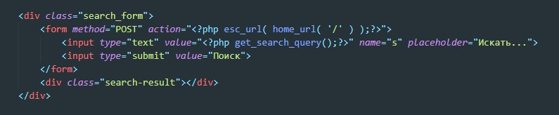
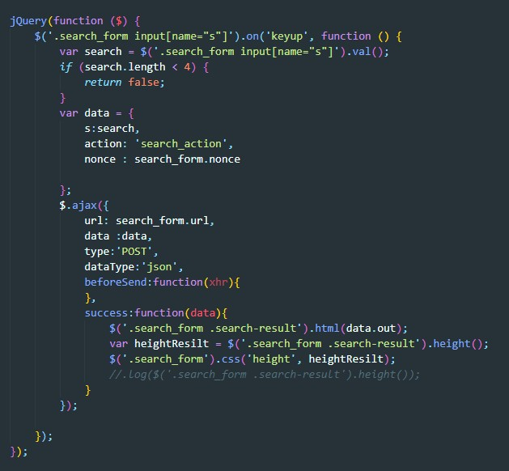
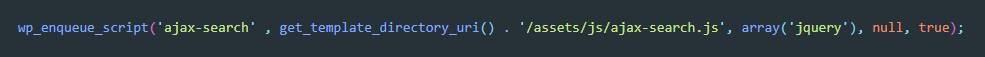
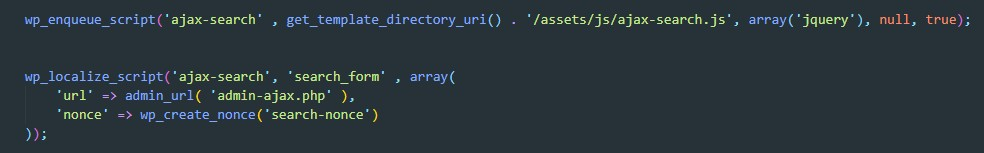
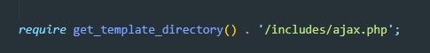

Форма поиска по сайту
Пример формы для поиска по сайту

В атрибут action добавляем php код (не забываем скобки php)php esc_url( home_url( '/' ) )
в атрибут value input надо обязательно добавить функцию get_search_query() так же в атрибуте name должна
быть буква "s"
Теперь добавим ajax т.е. при вводе текста у нас появлялся блок со списком найденных совпадений
Скрипт с ajax на Jquery будет выглядеть вот так:

Подключаем этот файл как обычно подключаем скрипты

Что бы ajax у нас заработал нам необходимо рядом с подключением скрипта написать функцию
wp_localize_script

- ajax-search - после какого скрипта мы будем загружать наш wp_localize_script
- search_form - название объекта
- array - передаем массив значений
Теперь пишем функцию обработчика. В папке includes создаем файл ajax.php и в него помещаем вот такой код
<?php
if ( ! defined( 'ABSPATH' ) ) {
exit; // Exit if accessed directly
}
add_action('wp_ajax_search_action', 'esp_search_ajax_action_callback');
add_action('wp_ajax_nopriv_search_action', 'esp_search_ajax_action_callback');
function esp_search_ajax_action_callback(){
if (!wp_verify_nonce($_POST['nonce'], 'search-nonce')){
wp_die('Данные отправлены с левого адреса');
}
$arg = array(
'post_type' => array('post', 'product'),
'post_status' => 'publish',
's' => $_POST['s']
);
$query_ajax = new WP_Query($arg);
$json_data['out'] = ob_start(PHP_OUTPUT_HANDLER_CLEANABLE);
if ( $query_ajax->have_posts()) {
while ($query_ajax->have_posts()) {
$query_ajax->the_post();
?>
<div class="title-searche"><?php echo get_the_title();?></div>
<?php
}
}
$json_data['out'] .= ob_get_clean();
wp_send_json($json_data);
wp_die();
}
Этот файл нам надо подключить в файле functions.php
